Rappels : électronégativité d’un atome et polarisation d’une liaison
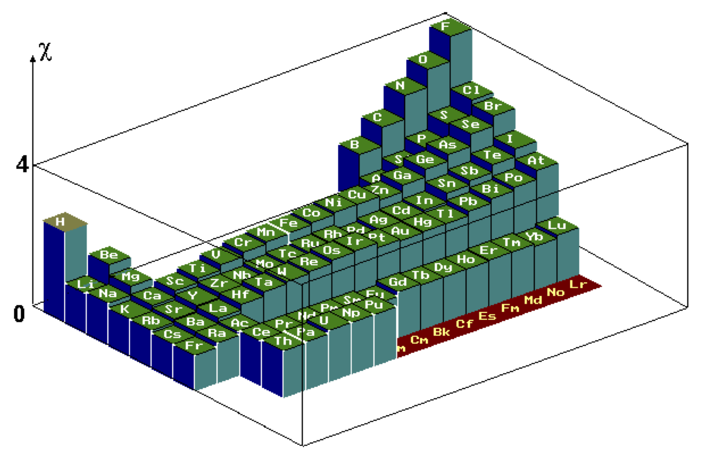
Polarisation d’une liaison
Une liaison entre deux atomes $A$ et $B$ est polarisée si les électronégativités de ces deux atomes sont différentes.
La détermination de la polarisation d’une liaison $\ce{A-B}$ se fait en attribuant à l'atome le plus électronégatif une charge partielle négative $\delta^-$ et à l'atome le moins électronégatif une charge partielle positive $\delta^+$. Plus la différence d’électronégativité entre les atomes liés est importante, plus la liaison est polarisée et plus les charges partielles portées par les atomes liés sont élevées.
Sites donneurs ou accepteurs de doublet d’électrons
Sites donneurs de doublet d’électrons
- Donner la formule de Lewis de l’ion hydroxyde.
Réponse
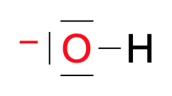
- L’atome d’oxygène respecte-t-il la règle de l’octet dans l’ion hydroxyde ?
Réponse
L’atome d’oxygène possède quatre doublets d’électrons périphériques (un doublet liant et trois doublets non liants) dans l’ion hydroxyde. Il respecte donc la règle de l’octet.
- Peut-on dire que l’atome d’oxygène constitue une zone riche en électrons, dans l’ion hydroxyde ?
Réponse
L’atome d’oxygène porte une charge électrique négative. Il forme donc bien une zone de la molécule riche en électrons.
- Donner la formule de Lewis de l’eau.
Réponse
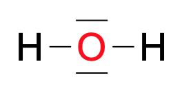
- L’atome d’oxygène respecte-t-il la règle de l’octet dans la molécule d’eau ?
Réponse
L’atome d’oxygène possède quatre doublets d’électrons périphériques (deux doublets liants et deux doublets non liants) dans la molécule d’eau. Il respecte donc la règle de l’octet.
- Peut-on dire que l’atome d’oxygène constitue une zone riche en électrons, dans la molécule d’eau ?
Réponse
L’atome d’oxygène, plus électronégatif que les atomes d’hydrogène porte une charge négative partielle $2 \delta^-$. Il forme donc bien une zone riche en électrons, dans la molécule.
- Donner la formule de Lewis de l’éthène $\ce{C2H4}$.
Réponse
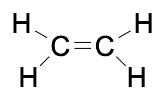
- Peut-on dire que la liaison double constitue une zone riche en électrons, dans la molécule d’éthène ?
Réponse
La double liaison, intrinsèquement, constitue une zone riche en électrons.
Exemples
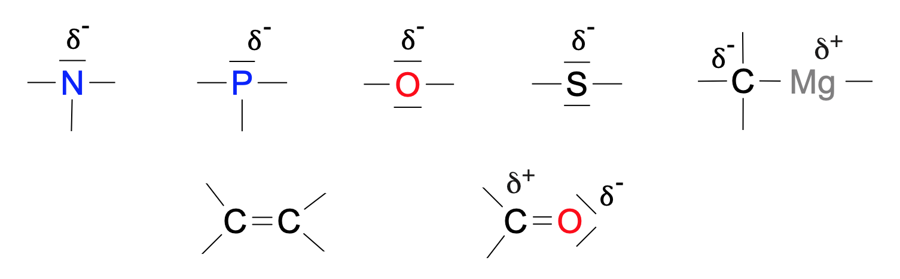
Sites accepteurs de doublet d’électrons
- L’ion hydrogène possède-t-il un électron ?
Réponse
L’ion hydrogène ne comporte aucun électron.
- Dans la molécule de chlorométhane l’atome de carbone vérifie-t-il la règle de l’octet ?
Réponse
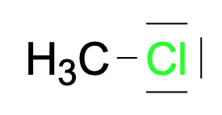 L’atome de carbone possède bien quatre doublets (tous liants) ; il vérifie donc la règle de l’octet.
- Pourquoi peut-on dire que l’atome de carbone constitue une zone pauvre en électrons dans la molécule ?
Réponse
L’atome de chlore est beaucoup plus électronégatif que l’atome de carbone. Ce dernier porte donc une charge partielle positive et constitue une zone pauvre en électrons au sein de la molécule.
Exemples
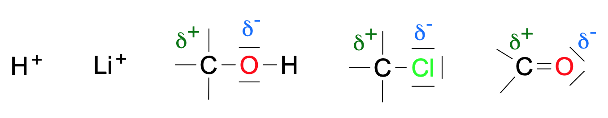
Interactions entre sites donneur et accepteur de doublets d’électrons
Définition
À l'échelle microscopique, le passage des réactifs aux produits peut nécessiter plusieurs réactions, ou étapes. Ces étapes constituent le mécanisme réactionnel. L’étude de l’interaction entre sites donneur et accepteur de doublet d’électrons permet d’interpréter les étapes d’un mécanisme réactionnel.
Chacune de ces réactions est une étape du mécanisme réactionnel et résulte de l'interaction entre un site donneur et un site accepteur de doublet d’électrons.
Le mouvement de ce doublet d’électrons peut être représenté par une flèche courbe, reliant le site donneur au site accepteur de doublet d’électrons.
Ces flèches courbes permettent d’expliquer la formation ou la rupture des liaisons au cours de ces réactions.
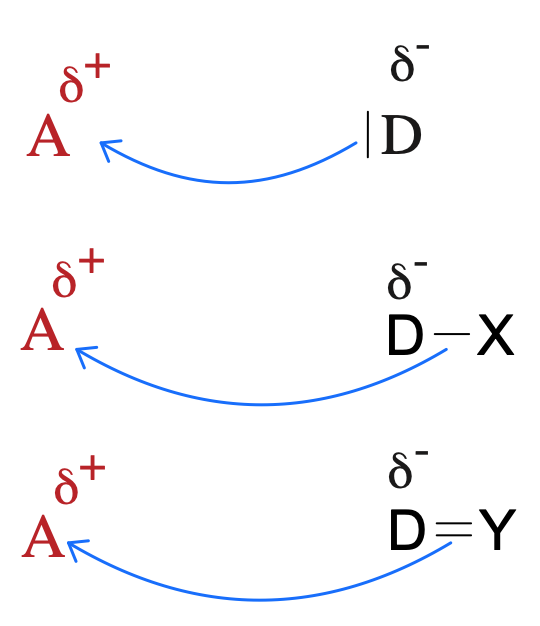
Exemple : Mécanisme de la réaction de synthèse du méthoxyméthane d’équation globale
L’équation de la réaction de synthèse du méthoxyméthane est : $$\ce{ 2 H3COH –> H3C-O-CH3 + H2O }$$
- Quel est le groupe caractéristique porté par la molécule $\ce{H3COH}$ ? Quelle est la fonction chimique associée ?
Réponse
- Groupe hydroxyle $\ce{-OH}$.
- Fonction alcool.
- Nommer la molécule $\ce{H3COH}$.
Réponse
$\ce{H3COH}$ est le méthanol.
Le mécanisme réactionnel de cette synthèse est : 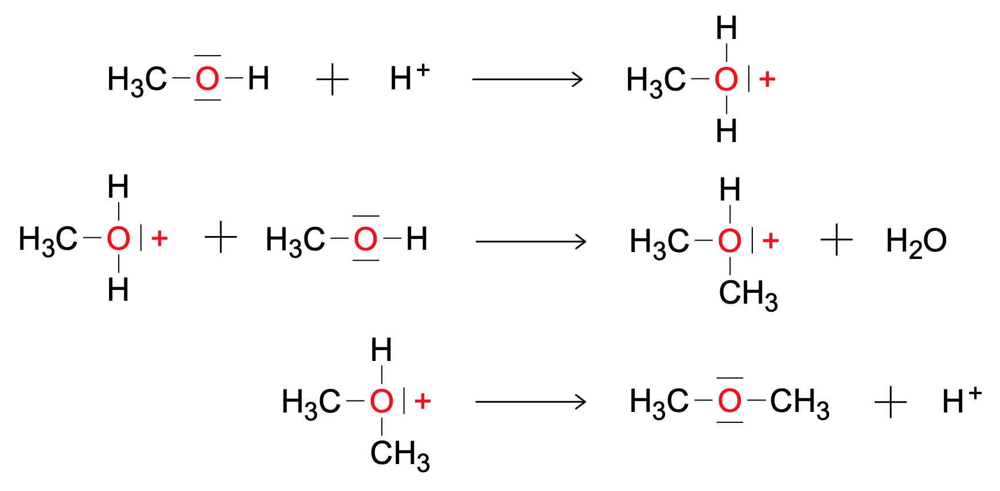
- Quel est le rôle de l’ion hydrogène $\ce{H+}$ ?
Réponse
$\ce{H+}$ est consommé lors de la première étape mais régénéré lors de la dernière, dans la même quantité. Il s’agit donc d’un catalyseur.
- Lors de l’étape une, repérer les sites donneur et accepteur de doublet d’électrons.
Réponse
- Méthanol : les doublets non liants de l’oxygène sont donneurs.
- Ion hydrogène : c’est un accepteur.
- Placer les différentes flèches courbes représentant les interactions entre les sites donneurs et les sites accepteurs de doublets d’électrons.
Réponse
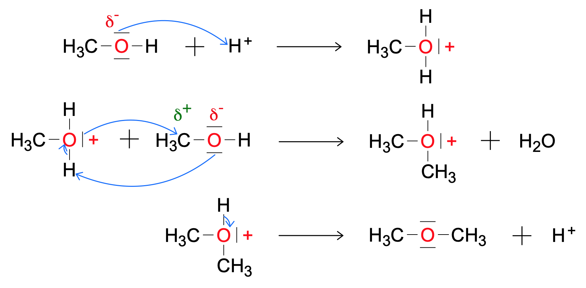
Exercices
Hydratation de l’hex-1-ène
On chauffe à reflux un mélange obtenu en ajoutant un volume $V = \pu{20 mL}$ d’hex-1-ène, de formule $\ce{CH2 = CH - CH2 - CH2 - CH2 - CH3}$, à une solution aqueuse d’acide sulfurique.
Après lavage, séchage et distillation, une masse $m = \pu{8,22 g}$ d’hexan-2-ol est obtenue.
Remarque. Une hydratation est une réaction chimique au cours de laquelle les atomes d’une molécule d’eau viennent se greffer sur les atomes participant à une liaison double au sein d’une molécule. La liaison double est rompue et remplacée par deux liaisons simples.
- Écrire l’équation de la réaction entre l’eau et l’hex-1-ène. Il se forme de l’hexan-2-ol.
Réponse
$$\ce{ C4H9-CH=CH2 + H2O –> C4H9-CH(OH)-CH3 }$$
- Les spectres IR de l’hex-1-ène et du produit obtenu sont donnés ci-dessous. Comment permettent-ils de vérifier que l’alcène de départ a été hydraté ?
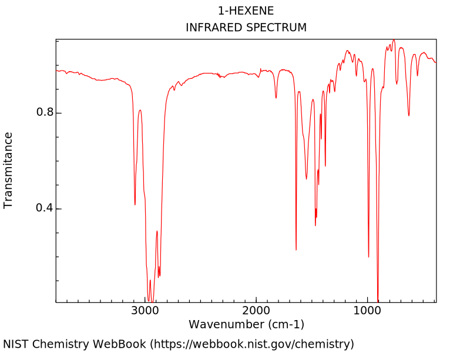 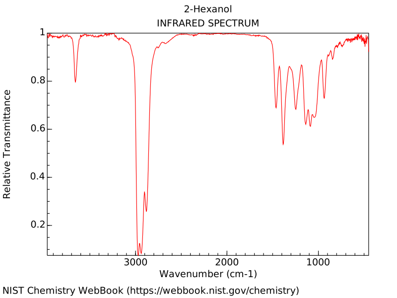
Réponse
L’apparition de la bande d’absorption large et forte de la liaison $\ce{O-H}$ entre 3300 et $\pu{3400 cm-1}$, la disparition de la bande d’absorption de la liaison $\ce{Ctri-H}$ vers $\pu{3100 cm-1}$ et de la bande d’absorption de la liaison $\ce{C=C}$ vers $\pu{1650 cm-1}$ permettent de vérifier que l’alcène de départ a été hydraté.
Le mécanisme réactionnel de l’hydratation de l’hex-1-ène est donné ci-dessous :
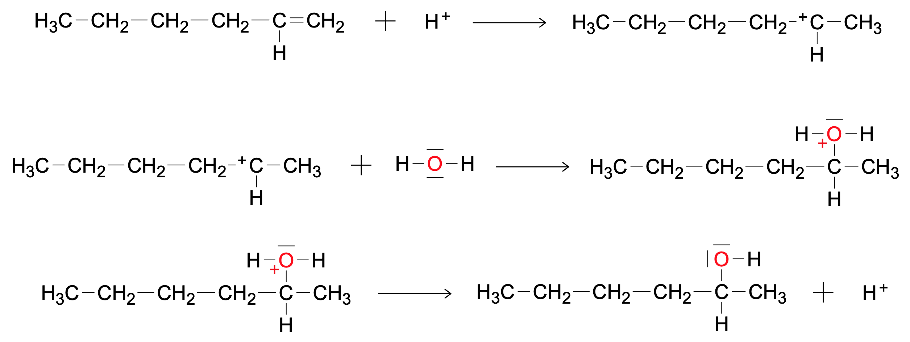
- Identifier les sites donneurs et accepteurs de doublet d’électrons dans les réactifs pour les étapes 1 et 2.
Réponse
- Dans l’étape (1), le site donneur de doublet d’électrons est la double liaison $\ce{C=C}$. Le site accepteur de doublet d’électrons est l’ion hydrogène $\ce{H+}$ puisqu’il porte une charge positive.
- Dans l’étape (2), le site donneur de doublet d’électrons est l’atome d’oxygène, car il possède deux doublets non liants (plus précisément, ce sont les doublets non liants qui sont donneurs). Le site accepteur de doublet d’électrons est l’atome de carbone porteur d’une charge positive.
-
Recopier l’équation, puis représenter, par des flèches courbes, le mouvement des doublets d’électrons permettant d’expliquer la formation et la rupture de liaisons observées.
-
Représenter la flèche courbe qui permet d’expliquer la rupture de liaison qui a lieu lors de l’étape (3).
Réponse
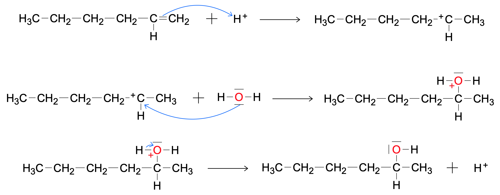
- Quel est le rôle joué par les ions hydrogène apporté par l’acide sulfurique ?
Réponse
Les ions hydrogène n’apparaissent pas dans le bilan de la réaction, mais interviennent dans le mécanisme réactionnel : ils catalysent la réaction.
D’une odeur âcre à une odeur fruitée
Les esters, naturellement présents dans les fruits, ont souvent une odeur agréable. La parfumerie et l’industrie alimentaire utilisent les esters et les obtiennent par extraction ou par synthèse.
Il est relativement aisé de passer d’un produit ayant une odeur âcre, comme l’acide formique, à l’odeur fruitée d’un ester. L’équation de la réaction de synthèse associée est : 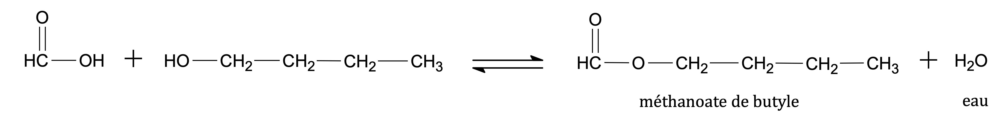
-
Entourer les groupes caractéristiques dans chacune des molécules (à l’exception de l’eau) et les nommer.
-
Quelles sont les fonctions associées à ces groupes caractéristiques ?
-
Nommer les deux premières molécules.
On donne le mécanisme réactionnel associé à la réaction : 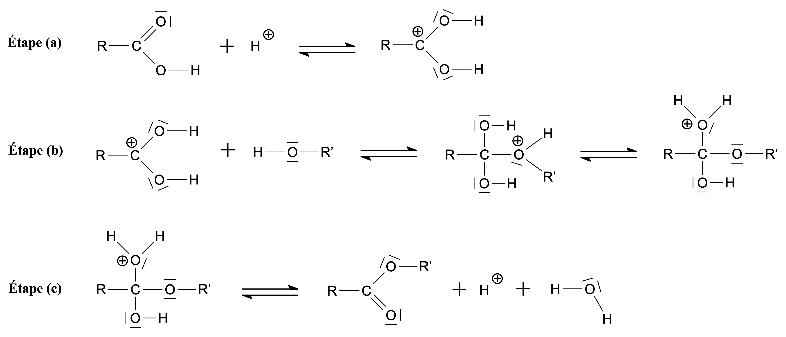
- Ajouter les flèches courbes modélisant les mouvements d’électrons dans chacune des étapes du mécanisme réactionnel.
Réponse
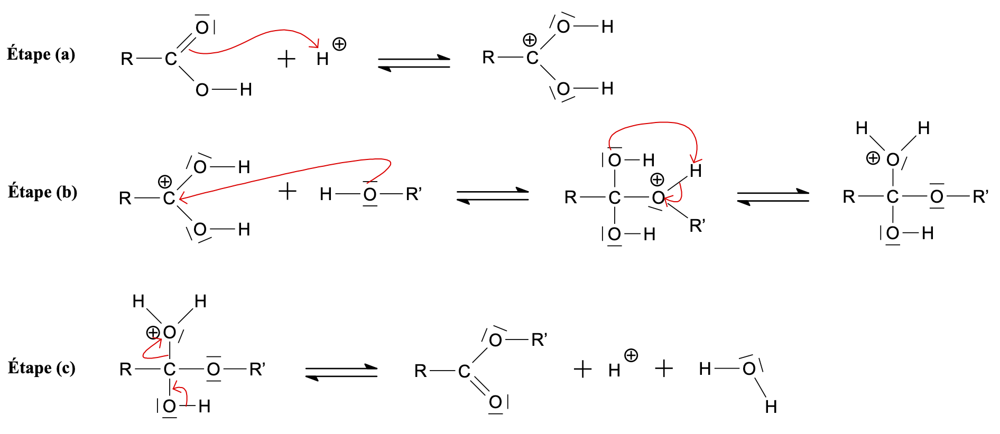
Étude de la synthèse de la lidocaïne
La lidocaïne est un anesthésique local souvent employé en sirop, spray ou comprimés pour lutter contre les maux de gorge, les aphtes et plaies à la bouche. Il existe aussi en crème pour apaiser les brûlures du Soleil ou les piqûres de moustiques.
Étapes de la synthèse de la lidocaïne
Deux étapes de la synthèse de la lidocaïne sont détaillées ci-dessous :
Étape 1 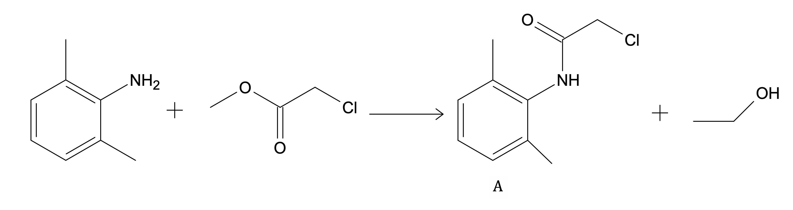 Étape 2 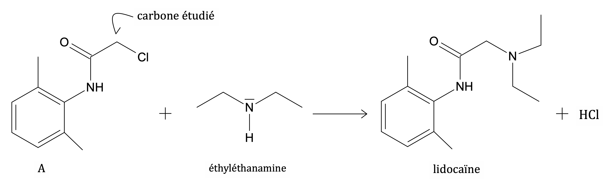
-
Dans l’étape 1, entourer les groupes caractéristiques et les nommer. Ne pas prendre en compte l’halogène $\ce{Cl}$.
-
L’éthyléthanamine possède-t-il un (des) site(s) accepteur(s) ou donneur(s) de doublet(s) d’électrons ? Lesquels ?
-
L’atome de carbone lié à l’atome de chlore porte une charge partielle positive. Justifier la présence d’une telle charge électrique.
-
L’atome de carbone étudié à la question précédente constitue-t-il un site accepteur ou donneur de doublet d’électrons ?
-
Représenter le mouvement des doublets d’électrons à l’aide de flèches courbes au cours de l’étape 2.
Réponse
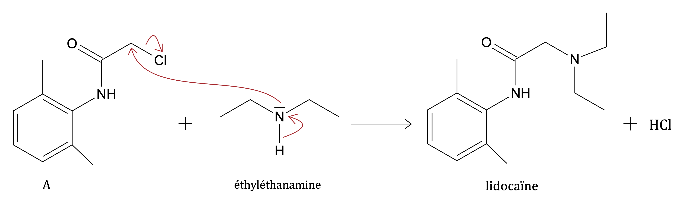
Étude de la cinétique de la synthèse de la lidocaïne
On réalise un suivi temporel de la réaction de l’étape 2 de la synthèse de la lidocaïne (cf. section ci-dessus). À la date $t_1=\pu{0 min}$, on introduit dans un ballon bicol de $\pu{100 mL}$ une masse $m_1=\pu{4,00 g}$ de N-chloroacétyl-2,6-diméthylaniline (molécule $A$ dans l’équation de la réaction) à l’état solide et un volume $V_2=\pu{10,0 mL}$ d’éthyléthanamine. On ajoute un volume $V_3=\pu{50 mL}$ de toluène ; ce solvant permet de favoriser le contact entre les espèces chimiques du mélange réactionnel. On chauffe à reflux le mélange. Le suivi de la réaction de synthèse est réalisé par prélèvements successifs à instants donnés, trempe et dosage de l’acide formé (acide chlorhydrique $\ce{HCl}$). On obtient alors les valeurs de l’avancement de la réaction en fonction du temps de réaction. Une fois la transformation achevée, on extrait la lidocaïne du mélange réactionnel par distillation.
Données
- Masses molaires (en $\pu{g.mol-1}$) : $M(\ce{C})=\pu{12,0}$ ; $M(\ce{H})=\pu{1,0}$ ; $M(\ce{O})=\pu{16,0}$ ; $M(\ce{N})=\pu{14,0}$ ; $M(\ce{Cl})=\pu{35,5}$.
- Masse volumique de l’éthyléthanamine : $\rho=\pu{0,707 g.mL-1}$.
- Formules brutes : molécule $A$ : $\ce{C10H12NOCl}$ ; éthyléthanamine : $\ce{C4H11N}$ ; lidocaïne : $\ce{C14H22N2O}$.
-
La trempe est une opération qui consiste à placer le prélèvement que l’on souhaite doser dans un erlenmeyer contenant un mélange eau + glace. Dans quel but procède-t-on ainsi ? Quel est le facteur cinétique qui intervient ? Détailler la réponse.
-
Montrer que la quantité de matière initiale de molécule $A$ est $n_{10}=\pu{2,00e-2 mol}$ et que la quantité de matière initiale d’éthyléthanamine est $n_{20}=\pu{9,68e-2 mol}$.
-
Déterminer la valeur de l’avancement maximal ainsi que le réactif limitant.
-
Après distillation, on récupère une masse $m'=\pu{3,96 g}$ de lidocaïne. Quel est le rendement $r$ de la synthèse ?
Remarque. On donne l’expression du rendement : $r=\dfrac{x_{exp}}{x_{max}}$.
On trace l’évolution de l’avancement de la réaction $x$ au cours du temps. 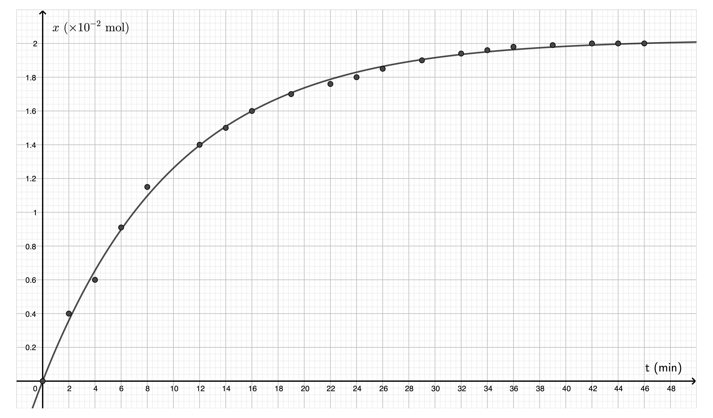
-
Après avoir donné sa définition déterminer le temps de demi-réaction t_(1/2) en montrant soigneusement la méthode employée.
-
La réaction est réalisée une seconde fois en ajoutant un catalyseur. Déterminer quelle courbe (a), (b), (c) ou (d) ci-dessous peut alors caractériser l’évolution de l’avancement de la réaction au cours du temps. Justifier la réponse. 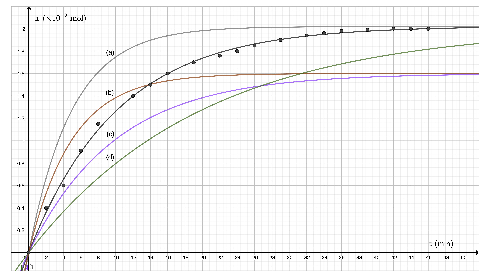